Как сайт выглядит сейчас
Скриншоты agbina.ru сняты с полной прокруткой 16 сентября 2026. Полные версии для десктопа (1440 px) и телефона (390 px), 12 страниц, лежат в папке research/screenshots.
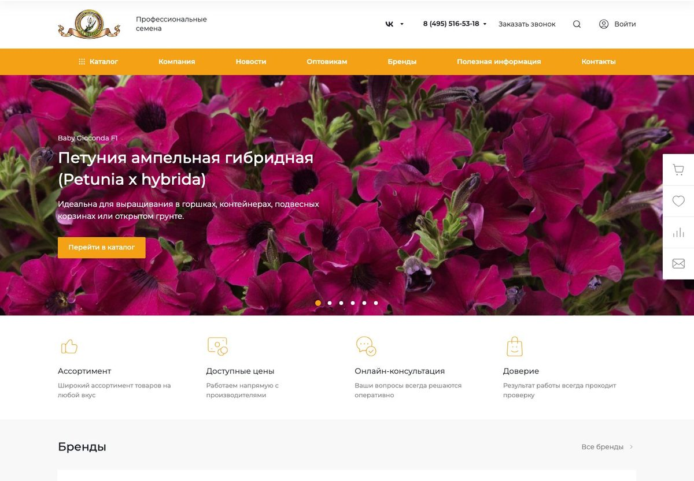
- Шапка с логотипом, телефоном, «Заказать звонок», поиском и «Войти»; оранжевое меню из семи пунктов
- Слайдер: один сорт на слайде (Petunia Baby Gioconda F1 и ещё пять), кнопка «Перейти в каталог» ведёт на карточку сорта
- H1 нет; кто продавец, для кого и как купить, первый экран не говорит
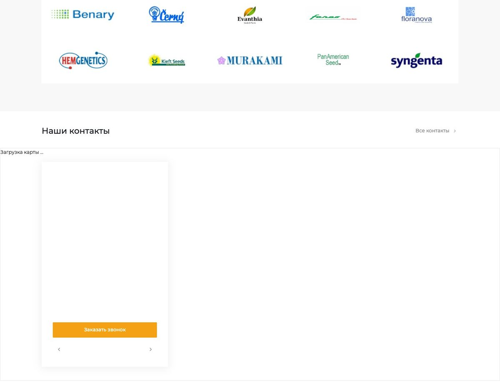
- Четыре иконки с подписями «Ассортимент: широкий ассортимент товаров на любой вкус», «Доверие: результат работы всегда проходит проверку», на десктопе перекрыты cookie-баннером
- 10 логотипов брендов без статуса и сроков
- «Наши контакты»: надпись «Загрузка карты…» на 400 px, карта не грузится
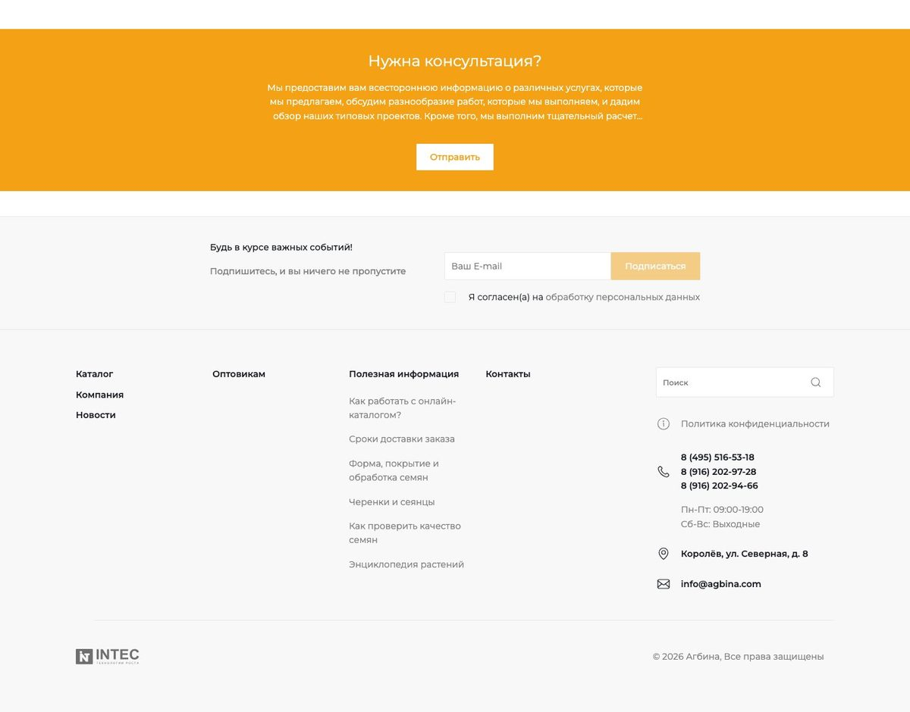
- Оранжевая полоса «Нужна консультация?» с текстом про «различные услуги, разнообразие работ, обзор типовых проектов и расчёт стоимости услуг»: шаблон агентства, не про семена
- Подвал без реквизитов, ассоциаций, ссылок на прайс и условия
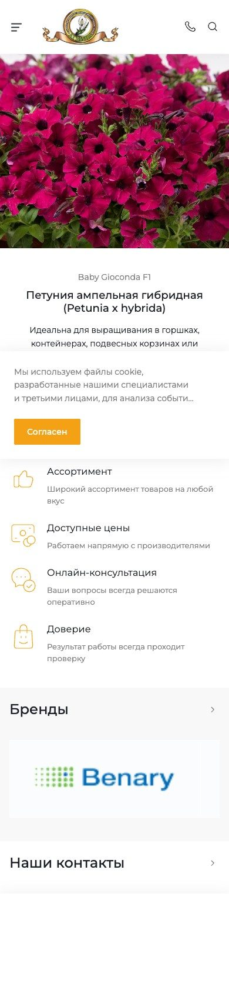
- PageSpeed mobile 45/100, LCP 63,2 с, HTML 525 КБ
- Первый экран: слайдер и кнопка, ниже те же иконки и бренды
- viewport с запретом масштабирования на 34 страницах (техаудит)
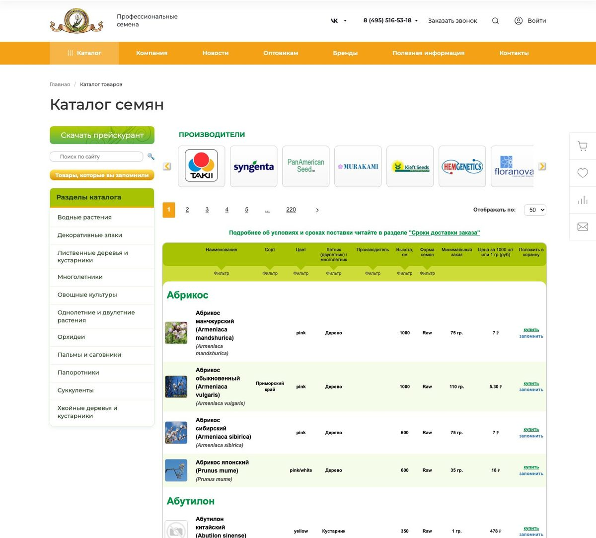
- Таблица из 11 столбцов: наименование, сорт, цвет, летник/многолетник, производитель, высота, форма семян, минимальный заказ, остаток, цена за 1 000 шт или 1 г, корзина
- 50 строк на странице, 220 страниц, около 11 000 позиций; 3 567 чекбоксов фильтров в HTML, 3,7 МБ
- Слева 11 разделов, логотипы производителей, «Скачать прейскурант»
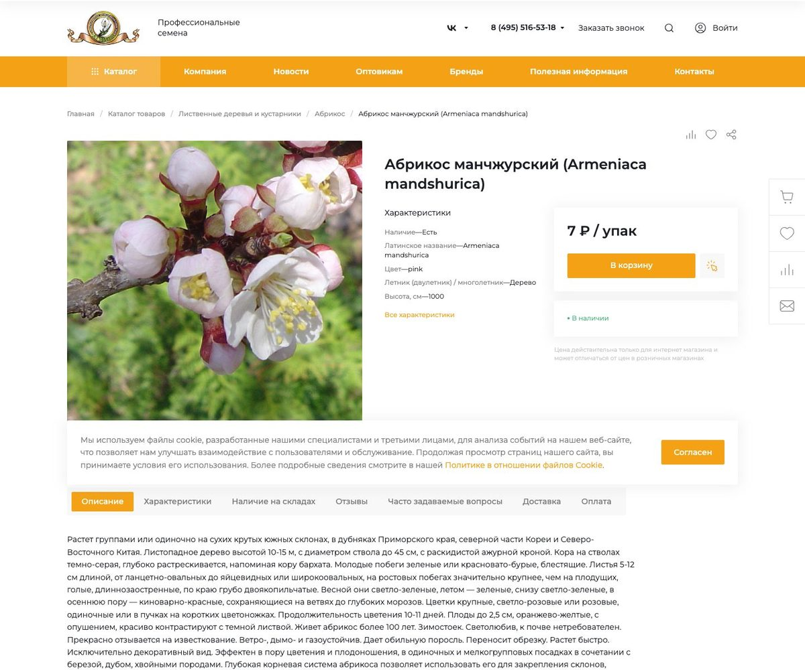
- Описание, характеристики, «Наличие: Есть», цена, «В корзину»
- Фасовка и минимальный заказ не рядом с ценой, нет срока поставки, бренда, похожих сортов
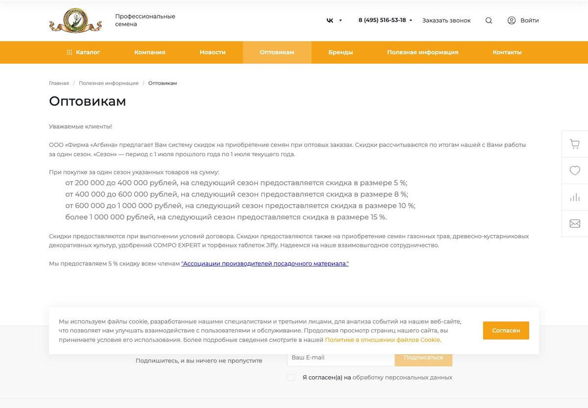
- Скидка 5 / 8 / 10 / 15 % по покупкам за сезон от 200 000 до более 1 000 000 ₽, 5 % членам АППМ
- Текстом, без таблицы, CTA и формы
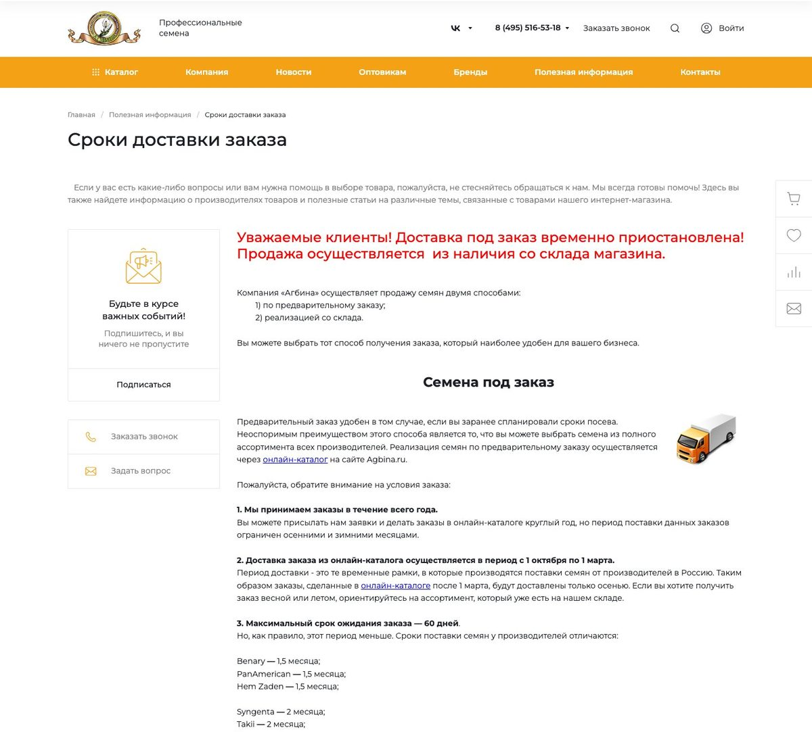
- Красное уведомление «Доставка под заказ временно приостановлена! Продажа осуществляется из наличия со склада»
- Ниже: предзаказ круглый год, поставка 1 октября — 1 марта, до 60 дней, сроки по брендам; склад в Подмосковье с прейскурантами А-К и Л-Я
- Страница спрятана в разделе «Полезная информация»
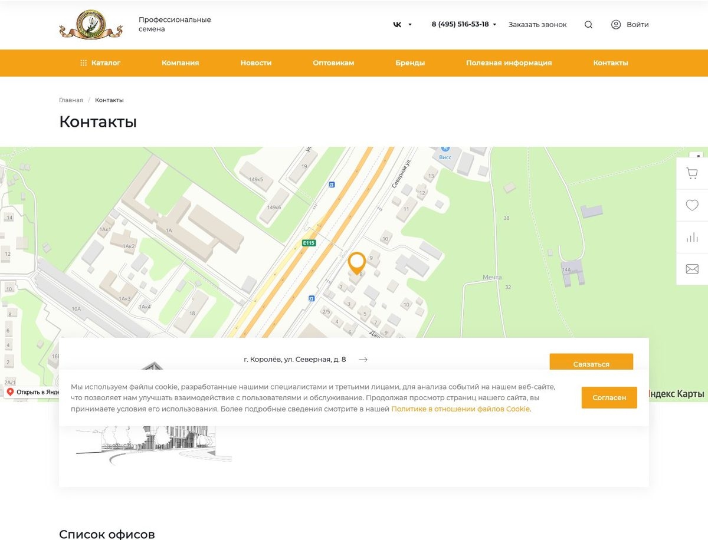
- «Загрузка карты…», адрес, режим, «Список офисов: Королёв»; без ролей телефонов и мессенджеров
- Пустая корзина: «выберите товар и нажмите В корзину», без альтернативы прислать список
Конкуренты и источники
Конкуренты взяты из ТОП-10 Яндекса (Arsenkin, Москва, 67 запросов; Keys.so, 14 запросов) и Google (Arsenkin и Ahrefs). В таблице число попаданий в ТОП-10 из 67 запросов и что у них на главной, чего нет у Агбины.
| Сайт | Яндекс | DR / трафик Google | Что взяли для прототипа | |
|---|---|---|---|---|
| optom.semena-tut.ru | 51 | 53 | 9 / 5 483 | H1 «Интернет-магазин профессиональных семян № 1», плитки категорий, «7 аргументов» с цифрами, стена брендов, адрес и мессенджеры в шапке |
| profsemcvet.com | 30 | 11 | 2,4 / 123 | Хиты с остатком «В наличии: 0,45 тыс. шт.» и ценой, акции, «Условия работы» на первом экране |
| semenakupi.ru | 29 | 1 | 1,8 / 176 | Фильтр по производителям, карточки с брендом, фасовкой 100 / 1 000 шт и ценой; «с 1997 года, эксклюзивные дистрибьюторы» |
| semenagavrish.ru | 26 | 44 | 38 / 29 753 | Страница «Семена оптом»: способы покупки, минимальная сумма, оплата и отгрузка |
| onlinesemena.ru | 22 | 4 | 30 / 5 907 | Раздел «Семена цветов ПРОФИ» с ценами и списком 10 брендов, единственный FAQ среди 36 страниц |
| seed.ru (Дом семян) | 7 | 37 | 18 / 1 535 | H1 «Продажа семян оптом», новинки с ценой, «92 года», лента брендов, адреса с картой, подвал с условиями и скидками |
| agroopt-market.ru | 12 | 36 | 1,6 / 3 981 | Топбар «Как заказать / Прайс / Сертификаты / Оплата / Доставка», плитки категорий с числом товаров, лестница цен, WhatsApp / Telegram / MAX |
| semenasad.ru (Поиск) | 3 | 34 | 30 / 2 948 | Профсемена как отдельное направление для производителей посадочного материала, прайс |
| sibseed.ru | 15 | 31 | 19 / 5 308 | Плитка 60 культур с фото, фильтр «в наличии», строки с брендом, фасовкой и ценой «руб/упак» |
| semco.ru | 13 | 12 | 27 / 27 231 | «Главное — забота о клиентах» с цифрами, PDF-каталог, отзывы с рейтингом, кнопка «Оптовым покупателям» на товаре |
| greenagri.ru | 3 | 14 | 1,1 / 1 575 | Алфавитная плитка культур, «компенсируем доставку от 15 до 100 %», «работаем с фермерами и юрлицами» |
| prof-semena.ru | 10 | 0 | 0 / 3 | Разделы «Семена цветов Профи большая / малая упаковка», «с 2012 года», прямые поставки |
| ozon.ru, wildberries.ru, market.yandex.ru | 40 / 27 / 15 | 29 / 14 / 0 | Маркетплейсы забирают запросы по культурам (пальмы, кактусы, суккуленты, цикламен) мелкими фасовками | |
| agbina.ru | 3 | 3 | 11 / 85 | Только брендовые запросы; agbina.com в Google по 12 запросам, включая 9 место по «семена деревьев и кустарников оптом» |
Источники: WordKeeper (Wordstat), Keys.so, Ahrefs API v3, Arsenkin, PageSpeed Insights, обход страниц curl и Playwright, техаудит и CRO-аудит Addu от 22.07.2026. Ограничения и полные таблицы в RESEARCH.md.
Запросы, по которым снималась выдача и спрос
Частотность Wordstat по России (WordKeeper, базовая / точная «!»). Полный список из 100 фраз с Москвой: data/demand.md.
| Группа | Запросы (показов в месяц, Россия) |
|---|---|
| Ниша | профессиональные семена 20 087 / 411; семена оптом 13 970 / 740; профессиональные семена интернет магазин 9 980 / 225; купить семена оптом 4 411 / 167; профессиональные семена цветов 1 789 / 172; семена оптом от производителя 798 / 124; семена цветов оптом 731 / 86; профессиональные семена цветов купить 486 / 178; поставщик семян 484; семена цветов профессиональные оптом 319 / 44; семена оптом москва 155; семена для питомников 104 |
| Культуры | семена пальм 3 392; семена кактусов 2 993; семена виолы 2 021; семена цикламена 1 882; семена петунии профессиональные 1 221 / 106; семена суккулентов 1 038; семена петунии профессиональные купить 445 / 118; семена редких растений 360; семена хвойных купить 302; семена экзотических растений 289; семена петунии оптом 197; семена бегонии оптом 36; семена бархатцев оптом 41 |
| Бренды | агбина 657 / 133; семена агбина 286; sakata семена 237; агбина семена официальный сайт 144 / 111; pan american семена 121; бенари семена 82; семена takii 51; семена benary 46; floranova семена 10; hem genetics семена 7 |
| Сопутствующие | газонная трава оптом 326; семена газонных трав оптом 203; торфяные таблетки jiffy 94; dlf семена газон 88; basacote удобрение 22 |
| Конкуренты в спросе (Keys.so, Москва) | белла профессиональные семена 2 789; соло профессиональные семена 2 319; семена оптом семена тут 2 224; профессиональные семена тут 2 026; семена оптом гавриш 245; аэлита семена оптом 182 |
Блоки главной страницы
Нумерация как в карте блоков и в ярлыках прототипа.
Верхняя полоса и шапка: адрес, режим, мессенджеры, «Отправить список»
Существующий + новоеОптовик первым делом проверяет, где склад, когда работают и как быстро связаться. На сайте сейчас: телефон, «Заказать звонок», VK и «Войти»; адрес и режим только в подвале и на странице контактов.
Данные- 39 из 67 запросов ниши геозависимы (Arsenkin commerce): «семена оптом», «профессиональные семена», «семена для питомников», «семена для садовых центров»
- Мессенджеры в шапке у 13 из 36 страниц конкурентов, ссылки «Как заказать / Прайс / Доставка» в топбаре у agroopt-market.ru
- CRO-аудит: кнопка «Отправить список» как ключевой next step для B2B
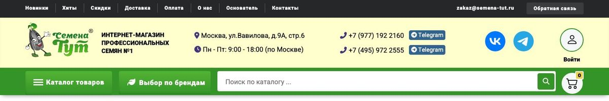
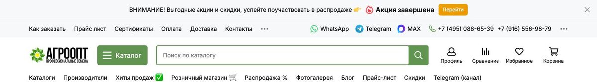
Первый экран: H1 «Профессиональные семена оптом для питомников, садовых центров и озеленения», три факта и форма списка
Новый: по исследованиюПервый экран должен за три секунды ответить: что продаём, кому, на каких условиях и что делать дальше. Сейчас его занимает слайдер из шести сортов без H1.
Данные- «профессиональные семена» 20 087 показов в месяц, «семена оптом» 13 970, «профессиональные семена интернет магазин» 9 980: оба слова нужны в H1
- H1 на главной отсутствует (техаудит 22.07.2026, проверено 16.09.2026); description уже говорит «работаем с юридическими лицами и фермерскими хозяйствами»
- H1 с позиционированием у лидеров: semena-tut.ru «Интернет-магазин профессиональных семян цветов и овощей № 1», seed.ru «Продажа семян оптом», agroopt «Интернет-магазин семян оптом»
- Форма списка: CRO-аудит (NEXT_STEP), пустая корзина сайта без альтернативы для оптовика
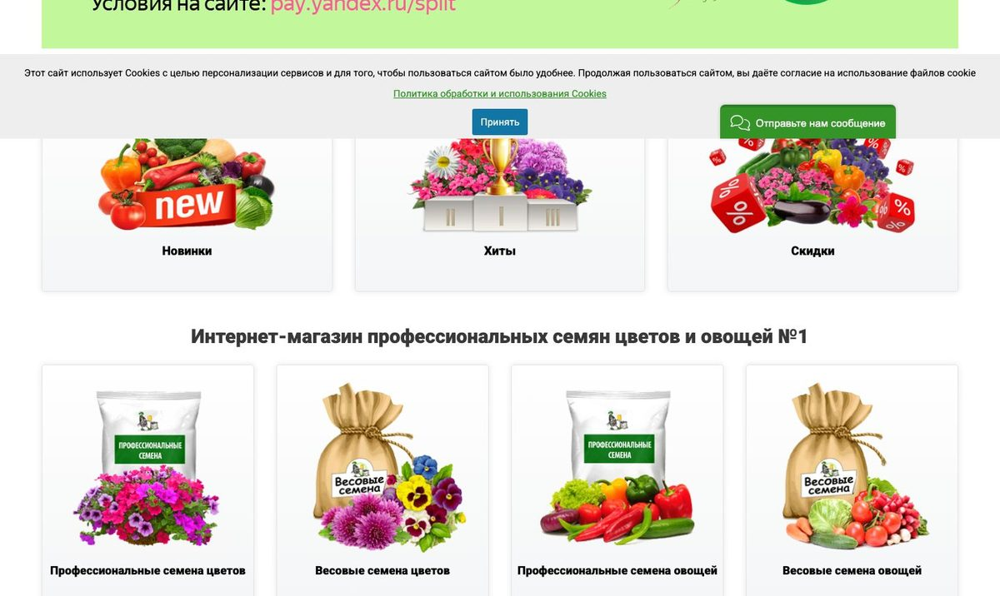
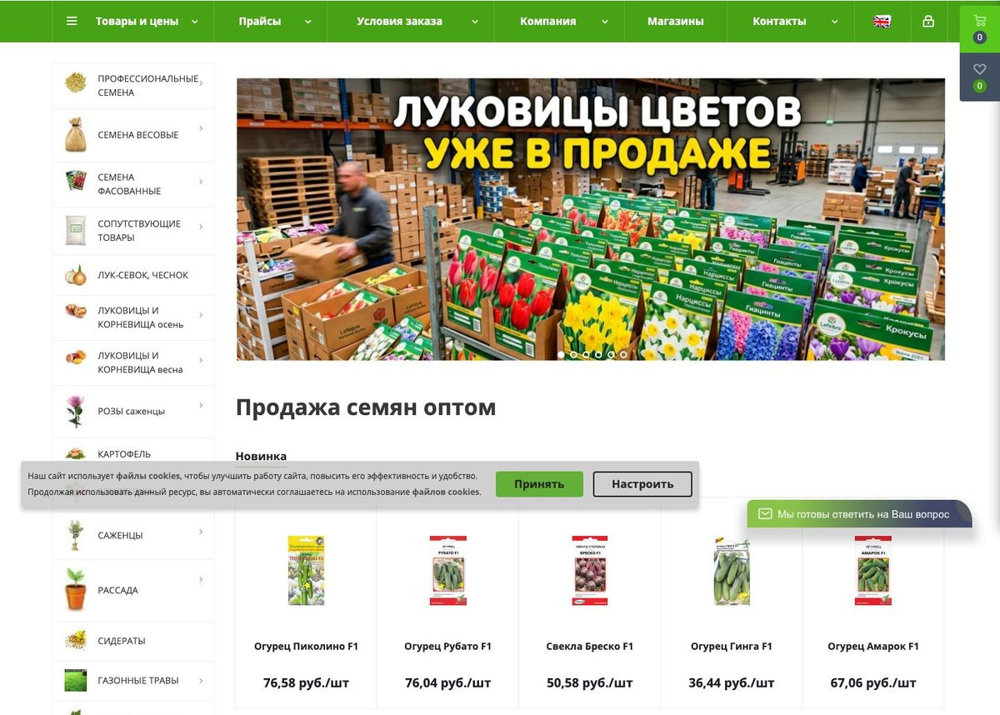
Полоса цифр: 11 000 позиций, 11 производителей, 4 ассоциации, скидка до 15 %
Новый: по исследованиюЧетыре иконки «Ассортимент: широкий ассортимент товаров на любой вкус» ничего не доказывают. Цифры со страниц «Компания» и «Оптовикам» доказывают.
Данные- Каталог: 220 страниц по 50 строк, 11 разделов, 11 производителей; членство в ISF, Fleuroselect, АНСК, АППМ с 2011 года (страница «Компания»)
- Аргументы с цифрами у конкурентов: semena-tut.ru «20 000 товаров, от 1 000 ₽, с 2012 года», semco.ru «с 1991 года, 3 млн клиентов, 264 селекционных достижения», seed.ru «92 года, пятёрка крупнейших»
- Брендовый спрос конкурентов выше («белла» 2 789, «соло» 2 319 против «агбина» 657): доказательства нужны на главной
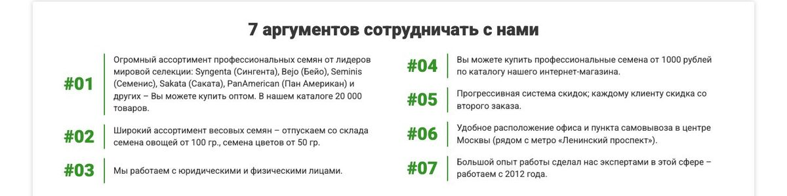
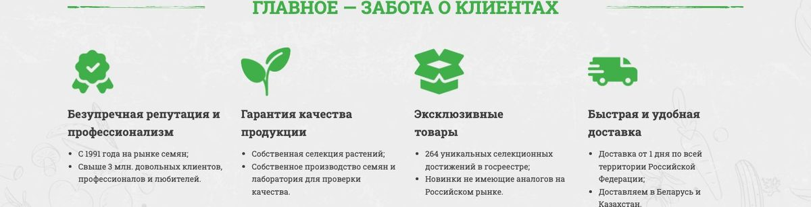
Разделы каталога с числом позиций и популярные культуры
Новый: по исследованиюС главной в каталог сейчас ведёт только пункт меню и промо-карточки сортов. Питомник ищет по культуре и группе, а не листает 220 страниц таблицы.
Данные- 11 разделов уже есть в каталоге сайта: однолетние и двулетние, многолетники, злаки, лиственные и хвойные деревья и кустарники, пальмы и саговники, папоротники, суккуленты, орхидеи, водные, овощные
- Спрос по культурам: «семена пальм» 3 392, «семена кактусов» 2 993, «семена виолы» 2 021, «семена цикламена» 1 882, «семена петунии профессиональные» 1 221, «семена суккулентов» 1 038
- Плитки категорий с числом товаров у agroopt-market.ru (24 плитки), 8 плиток у semena-tut.ru, 60 культур с фото у sibseed.ru, алфавит у greenagri.ru
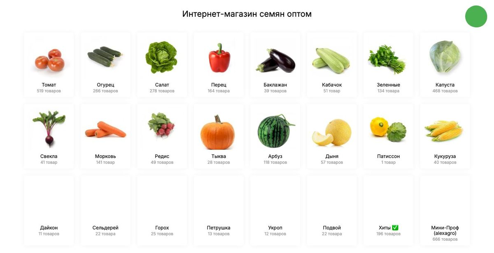
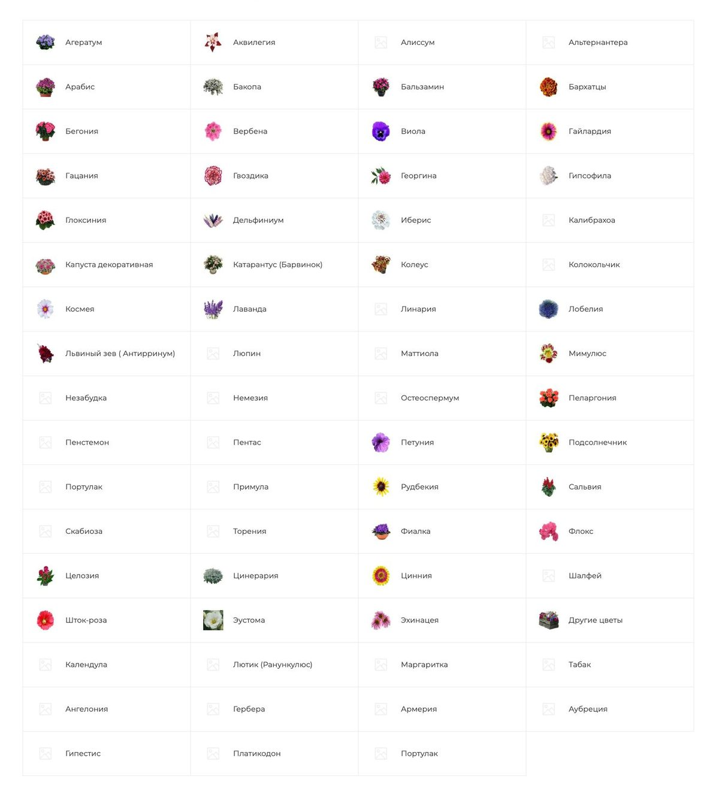
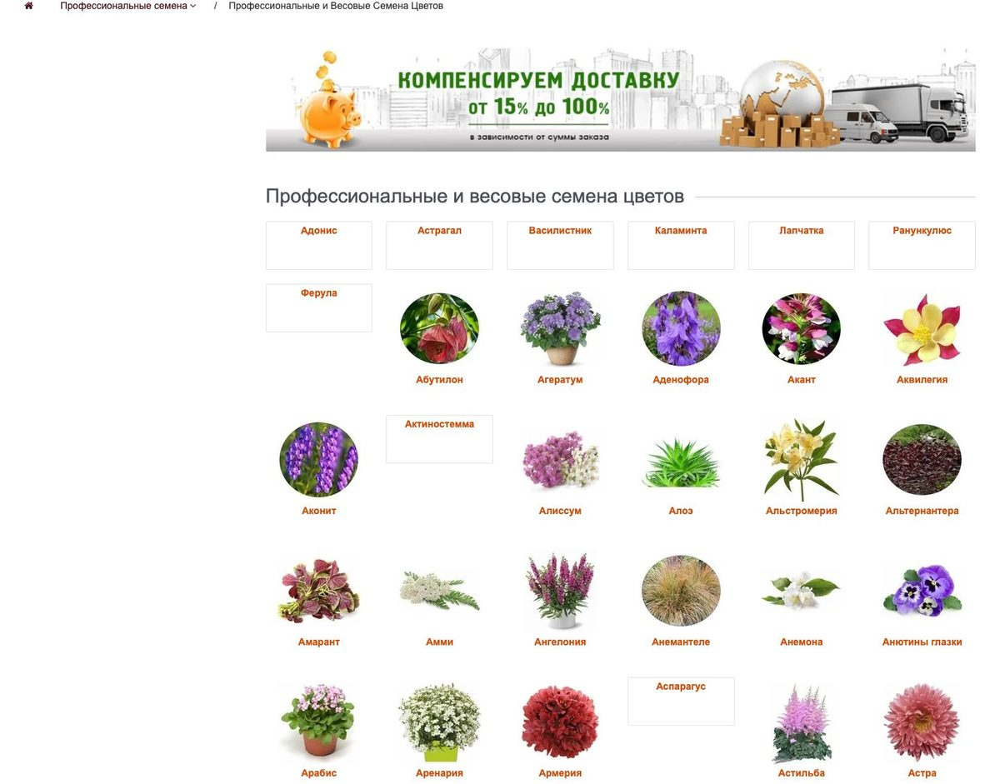
Со склада сейчас: сорта с ценой за 1 000 шт, минимальным заказом, остатком и брендом
Новый: по исследованиюНа главной нет ни одного товара с ценой, хотя в каталоге цена, остаток и минимальный заказ есть в каждой строке. Оптовик сравнивает цену за 1 000 семян и фасовку до звонка.
Данные- Цена в рублях на странице у 23 из 36 страниц конкурентов, наличие у 14, фасовка 1 000 шт у 10, 100 шт у 9
- profsemcvet.com показывает «В наличии: 0,45 тыс. шт.» и цену прямо в хитах; semenakupi.ru — бренд, «в наличии», фасовку 100 / 1 000 шт; sibseed.ru — «руб/шт» и «руб/упак» с брендом
- Сорта из слайдера сайта (петуния Baby Gioconda F1, виола Xtrada, виола рогатая, кальцеолярия, аквилегия) переносятся сюда с ценой и остатком
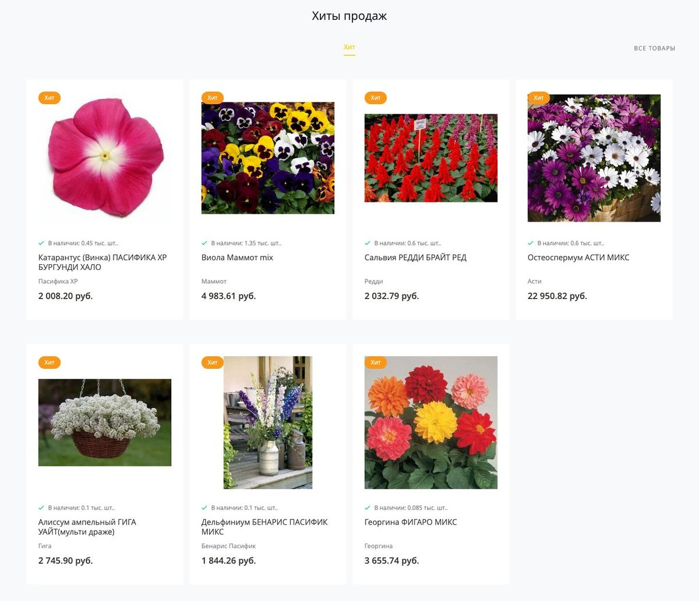
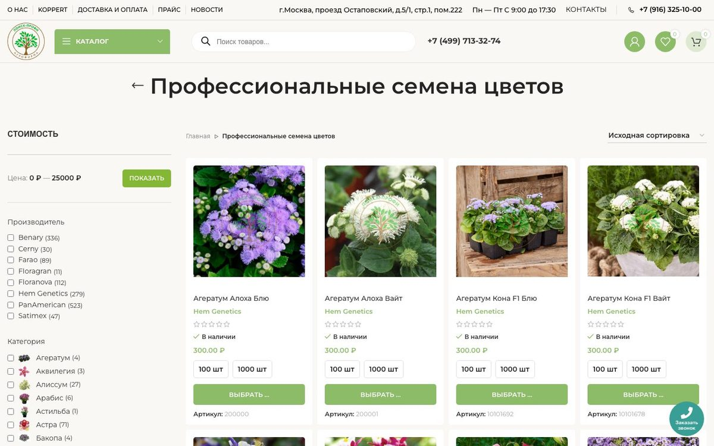
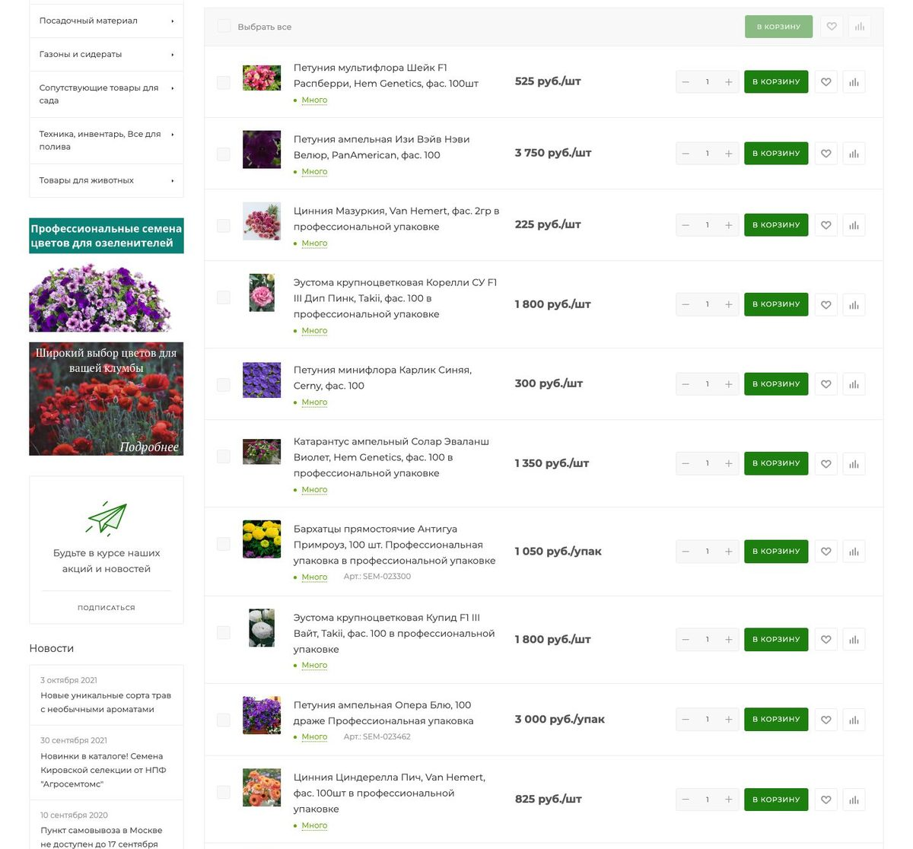
Как купить: со склада сейчас или по предзаказу, сроки по брендам, шаги
Новый: по исследованиюГлавная маркетинговая проблема из CRO-аудита: покупатель сам собирает условия из «Оптовикам», «Сроки доставки», «Как работать с каталогом» и корзины. Условия предзаказа и склада нужны там, где принимается решение.
Данные- Страница «Сроки доставки заказа»: предзаказ круглый год, поставка 1 октября — 1 марта, до 60 дней; Benary, PanAmerican, Hem Genetics 1,5 месяца; Syngenta, Takii, Farmen, Floranova 2 месяца; склад в Подмосковье с прейскурантами А-К и Л-Я
- Там же красное уведомление «Доставка под заказ временно приостановлена»: в прототипе это баннер над блоком, который убирается, когда предзаказ откроется
- semenagavrish.ru держит ТОП-10 Яндекса по 26 и Google по 44 запросам страницей «Семена оптом» с тремя способами покупки, минимумом 10 000 ₽ и правилами оплаты
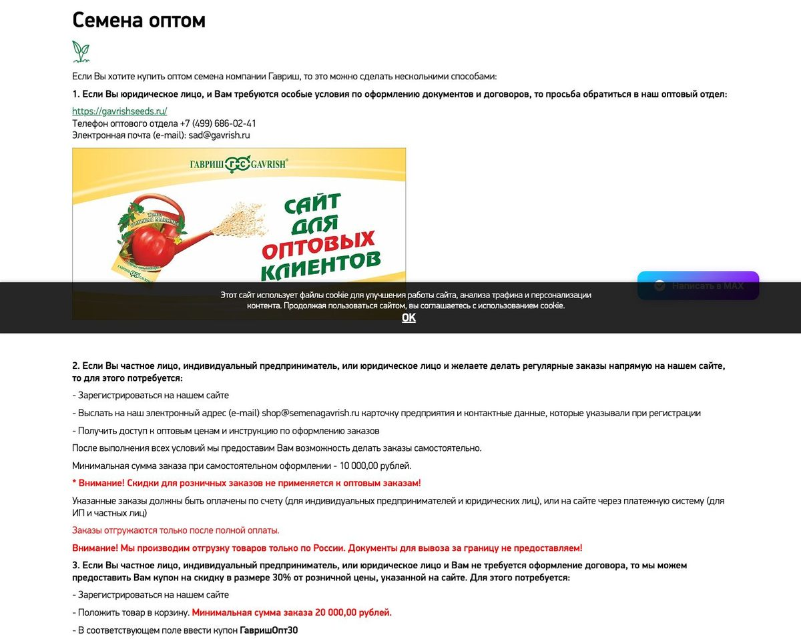
Скидки по обороту таблицей с CTA «Запросить условия»
Существующий + новоеШкала 5 / 8 / 10 / 15 % — сильный B2B-аргумент, но живёт текстом на странице «Оптовикам» без CTA. На главной она показывает питомнику, с какого оборота выгоднее покупать в одном месте.
Данные- Страница «Оптовикам»: от 200 000 ₽ за сезон 5 %, от 400 000 ₽ 8 %, от 600 000 ₽ 10 %, более 1 000 000 ₽ 15 %, 5 % членам АППМ; распространяется на газон, деревья и кустарники, Compo Expert, Jiffy
- Скидки упоминают 26 из 36 страниц конкурентов; semena-tut.ru «прогрессивная система скидок со второго заказа», gavrish «купон 30 % при заказе от 20 000 ₽»
- CRO-аудит: «добавить калькулятор или таблицу „какую скидку получите“, CTA на заявку»
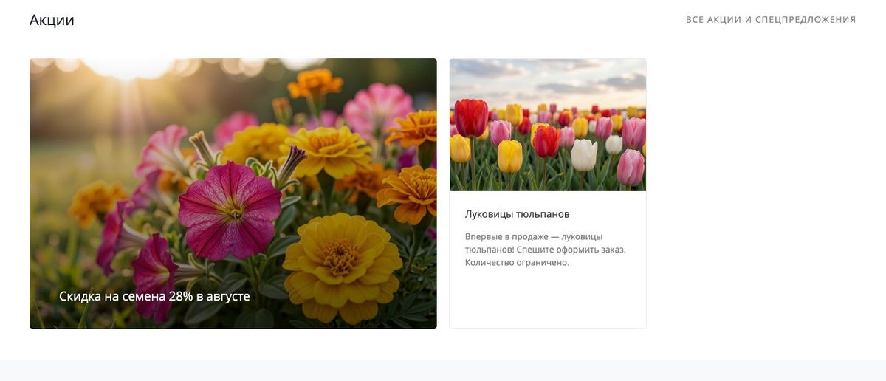
Производители со сроком поставки и ссылкой в каталог по бренду
Существующий + новоеЛоготипы на сайте есть, но без статуса и сроков и без перехода в каталог с фильтром. Питомник часто ищет конкретную серию конкретного производителя.
Данные- Спрос по брендам: «sakata семена» 237, «pan american семена» 121, «бенари семена» 82, «семена takii» 51, «семена benary» 46; по Keys.so agbina.ru стоял по «syngenta официальный» и «бенари семена официальный сайт» со старых URL, которые теперь 404
- Сроки поставки по брендам уже описаны на странице «Сроки доставки»
- semena-tut.ru: «Выбор по брендам» в шапке и стена из 48 логотипов; semenakupi.ru: фильтр по производителям в разделе
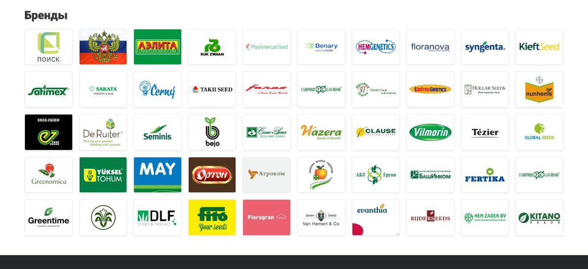
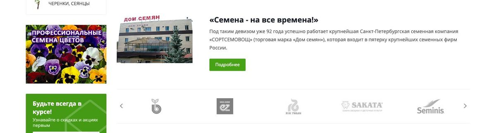
Не только цветы: деревья, хвойные, пальмы, суккуленты, редкие растения
Новый: по исследованиюЭто единственное, чего нет ни у одного конкурента из ТОП-10 по профсеменам цветов, а у Агбины есть в каталоге и на странице «Компания» (обмен с ботаническими садами). На главной об этом ни слова.
Данные- «семена пальм» 3 392 показа в месяц, «семена кактусов» 2 993, «семена суккулентов» 1 038, «семена редких растений» 360, «семена экзотических растений» 289, «семена хвойных купить» 302, «семена деревьев и кустарников оптом» (agbina.com уже на 9 месте в Google)
- В Яндексе по этим запросам стоят маркетплейсы и розница (ozon.ru 40, wildberries.ru 27 попаданий из 67), по хвойным — питомники oreshka-pitomnik.ru, treeseed.ru
- Разделы каталога сайта: лиственные и хвойные деревья и кустарники, пальмы и саговники, папоротники, суккуленты, орхидеи, водные растения
Доставка, самовывоз, оплата по счёту и документы
Новый: по исследованиюНа сайте нет раздела «Доставка и оплата», хотя для юрлица это условие сделки: счёт, договор, накладная, кто везёт и сколько стоит.
Данные- Доставка описана у 31 из 36 страниц конкурентов, юрлица/безнал/счёт у 14, самовывоз у 8
- semco.ru: «доставка от 1 дня по России, в Беларусь и Казахстан»; euro-semena.ru: СДЭК, Почта России, оплата при получении; greenagri.ru: «компенсируем доставку от 15 до 100 %»
- Условия и стоимость в прототипе помечены как условные: их заполняет клиент
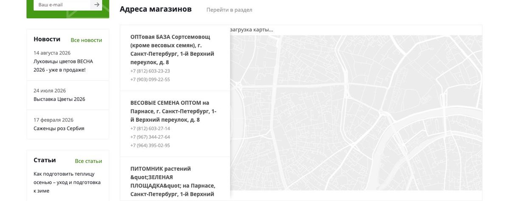
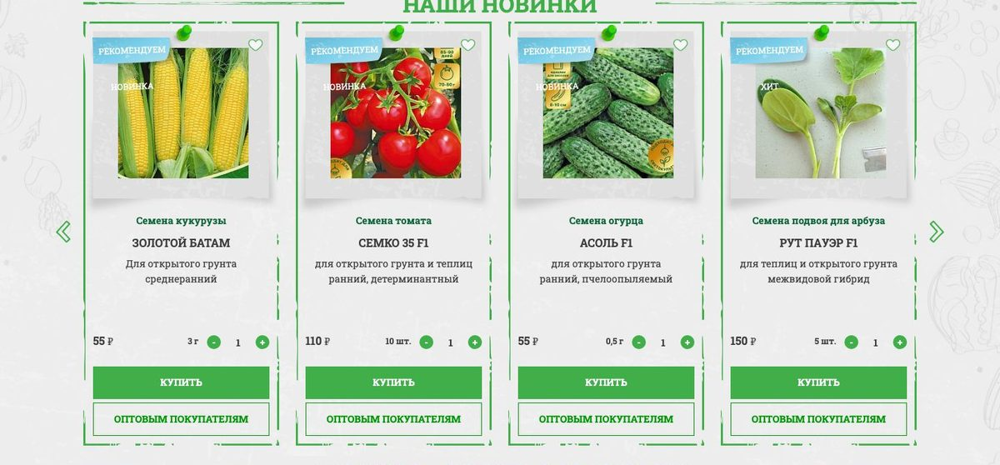
Почему Агбина: ассоциации, ботанические сады, собственные направления, подбор
Новый: по исследованиюДоказательства доверия лежат на странице «Компания»: ISF, Fleuroselect, АНСК, АППМ с 2011 года, обмен с ботаническими садами, DLF, Jiffy, Compo Expert. Конкуренты выносят такое на главную, потому что их ищут по названию магазина.
Данные- «лет на рынке» или год основания у 13 из 36 страниц, сертификаты у 4, гарантия у 19
- semenakupi.ru: «с 1997 года, эксклюзивные дистрибьюторы»; prof-semena.ru: «с 2012 года, прямое сотрудничество с производителями»; seed.ru: «92 года, входит в пятёрку крупнейших семенных фирм»
- CRO-аудит: «нет короткого trust-блока рядом с решением»
Отзывы питомников и новости каталога
Существующий + новоеОтзывов на сайте нет, новости есть в разделе, но на главной не показаны. Для B2B-покупателя отзыв другого питомника весит больше, чем текст о компании; новинки каталога показывают, что ассортимент живой.
Данные- Отзывы у 23 из 36 страниц конкурентов, новинки у 27; semco.ru показывает «О нас пишут» с рейтингом и датами, agroopt-market.ru и semena-tut.ru — новости на главной
- Новости сайта: «Ассортимент Floranova теперь в онлайн-каталоге» (7 ноября 2025), черенки и сеянцы Syngenta FloriPro, каланхоэ Queen
- Тексты отзывов в прототипе условные: заменить реальными и дать ссылку на отзывы в Яндекс Картах (в Google по «агбина» карточка отзывов Яндекс Карт стоит на 8 месте)
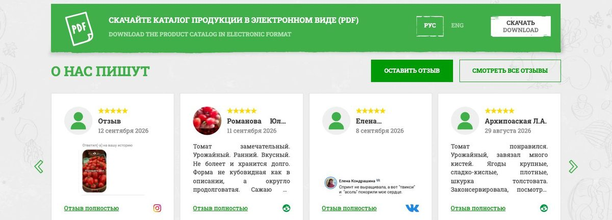
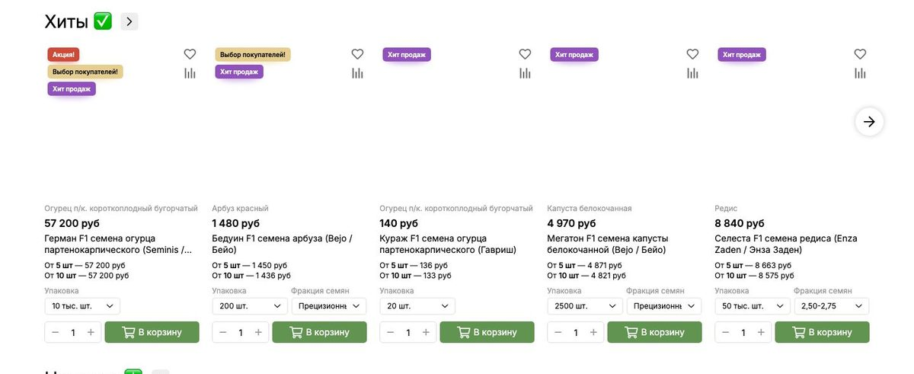
Отправить список семян: форма с файлом и шаги после заявки
Новый: по исследованиюПолоса «Нужна консультация?» на сайте обещает «обзор типовых проектов и расчёт стоимости услуг». Оптовик приходит со списком сортов на сезон и хочет отдать его, а не «заказать звонок».
Данные- CRO-аудит: NEXT_STEP «форма „отправить список семян“: организация, контакты, файл, желаемый срок» и PROCESS «5 шагов после заявки»
- Пустая корзина сайта не предлагает альтернативы; на странице «Сроки доставки» заказы принимаются на info@agbina.com, то есть список по почте уже рабочий сценарий
- Формы заявки у 9 из 36 страниц конкурентов, мессенджеры у 13
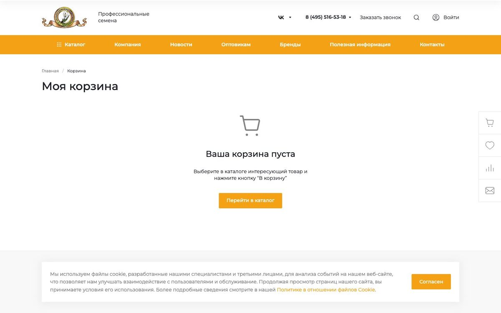
FAQ: восемь вопросов перед заказом
Новый: по исследованиюОтветы на вопросы «со склада или под заказ», «когда привезут», «минимальный заказ», «как получить счёт», «что если сорта нет» на сайте есть, но разбросаны по четырём страницам. FAQ собирает их и даёт разметку FAQPage.
Данные- FAQ есть только у 1 из 36 страниц конкурентов (onlinesemena.ru): точка отстройки
- CRO-аудит: блок FAQ «когда привезут, можно ли купить со склада, как получить счёт, что делать с заменами, какие документы, как работает скидка»
- Половина хвостов по «семена петунии» информационные («когда сажать семена петунии на рассаду» 12 054): вопросы и статьи держат этот спрос
Контакты с ролями и картой, подвал с реквизитами, липкая панель на мобильном
Существующий + новоеБлок контактов на главной есть, но карта не загружается, а три телефона идут без ролей. Подвал не содержит реквизитов, ассоциаций и ссылок на соседние магазины Агбины. На телефоне нужен быстрый доступ к звонку и списку.
Данные- CRO-аудит: «добавить быстрые роли: отдел продаж, консультация по предзаказу, складское наличие, документы/счёт, SLA ответа»
- seed.ru и profsemcvet.com показывают адреса с картой на главной; agroopt-market.ru — ОГРН и реквизиты в подвале
- По «агбина» в Яндексе agbina-jiffy.ru, agbina-grass.ru и agbina-compo.ru стоят на 2, 4 и 5 местах, а с главной agbina.ru на них нет ссылок; agbina-grass.ru получает из Google 1 150 визитов в месяц против 85 у agbina.ru
- PageSpeed mobile 45/100: липкая панель с телефоном и списком вместо тяжёлого слайдера
Что убрали и исправили
| Было на сайте | Решение в прототипе |
|---|---|
| Слайдер из шести сортов на первом экране, без H1 и оффера | Первый экран с H1 «Профессиональные семена оптом для питомников, садовых центров и озеленения», тремя фактами и формой списка; сорта перенесены в блок «Со склада сейчас» с ценой и остатком |
| Четыре иконки с шаблонными подписями, на десктопе под cookie-баннером | Полоса цифр: 11 000 позиций, 11 производителей, 4 ассоциации, скидка до 15 % |
| 10 логотипов брендов без статуса и сроков | Карточки производителей со сроком поставки и ссылкой в каталог с фильтром |
| «Наши контакты» с надписью «Загрузка карты…» на 400 px | Статичная карта Королёва с точкой, телефоны с ролями, реквизиты |
| Полоса «Нужна консультация?» с текстом про «типовые проекты и расчёт стоимости услуг» | Блок «Пришлите список семян на сезон» с формой, файлом и шагами после заявки |
| Условия покупки на четырёх страницах: «Оптовикам», «Сроки доставки», «Как работать с каталогом», корзина; «Прейскуранты» по /help/price/ отдают «Элемент не найден» | Блоки «Как купить» (склад и предзаказ, сроки по брендам, шаги), «Скидки по обороту» таблицей, «Доставка и оплата», FAQ; ссылка на рабочую страницу прейскурантов /prices/ |
| Уведомление «Доставка под заказ временно приостановлена» противоречит тексту о предзаказе на той же странице | Баннер над блоком «Как купить», который убирается, когда предзаказ откроется; путь «Со склада» помечен «сейчас» |
| Меню: Каталог, Компания, Новости, Оптовикам, Бренды, Полезная информация, Контакты; условия спрятаны в «Полезной информации» | Меню под маршрут оптовика: Каталог, Производители, Как купить, Оптовикам, Доставка, Компания, Контакты |
| «Заказать звонок» и VK как единственные способы связи | Telegram и WhatsApp в шапке и контактах, «Отправить список» в шапке, форма на первом экране, модальная форма, липкая панель на мобильном |
| Деревья, хвойные, пальмы, суккуленты и ботанические сады упомянуты только на странице «Компания» | Разделы каталога и блок «Не только цветы» на главной |
| Подвал без реквизитов, ассоциаций и ссылок на agbina-grass.ru, Jiffy, Compo Expert, agbina.com | Подвал с каталогом по разделам, условиями, компанией, соседними магазинами и реквизитами |
| Вне прототипа, из техаудита: robots.txt закрывает сайт, sitemap ведёт на технический домен, старые URL отдают 404 без редиректов, нет canonical, счётчиков и security headers, viewport с запретом масштабирования, LCP 63 с на мобильном | Открыть robots, исправить sitemap, поставить 301 со старых адресов на новые карточки и бренды, canonical, Метрику и Search Console, убрать user-scalable=no, ускорить мобильную версию |